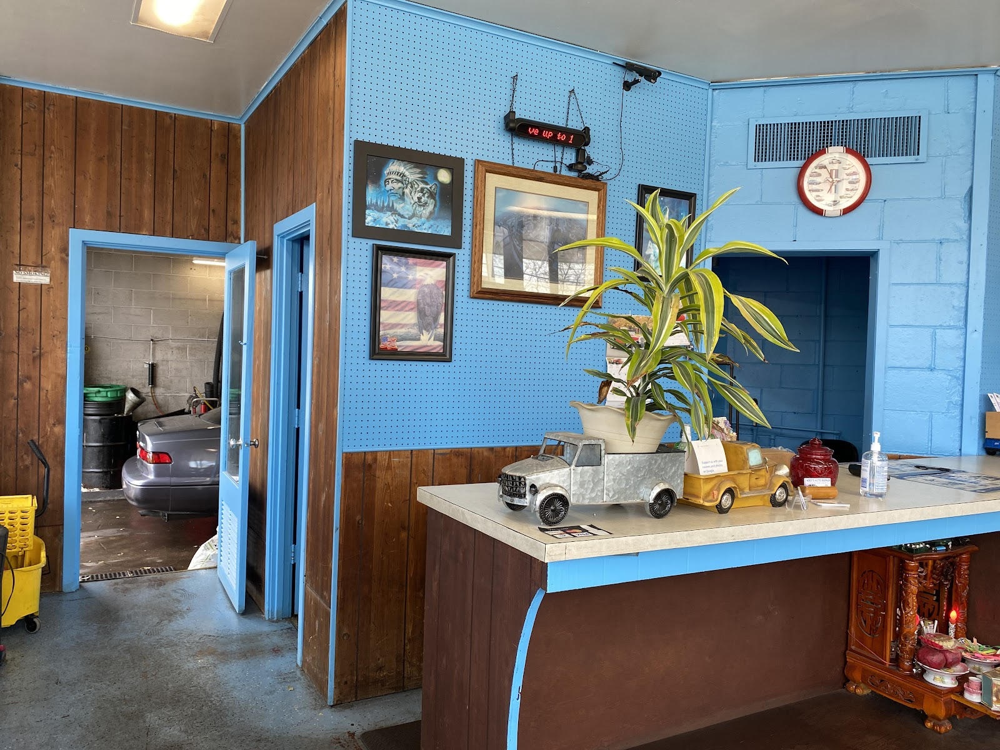

St Paul's Most-Trusted Mechanic on White Bear Avenue
Mike's Auto Repair is an auto repair shop in St Paul, Minnesota, offering brake repair, oil changes, and diagnostics for drivers across the East Side and beyond — with 414 five-star reviews built one honest repair at a time.
Auto Repair Services in St Paul, MN
From a routine oil change to the diagnostic work the dealership wants to charge you double for — if it's under the hood, our team can take a look, all done onsite at our White Bear Ave shop. Tap any service below for the full details.
General Auto Repair
Dashboard warning lights, strange noises, batteries, cooling system issues, or something that just feels off — we diagnose it and explain exactly what's going on before we fix it.
Learn moreBrake Repair
Grinding, squealing, or a soft pedal — brake and rotor work is one of the jobs we hear about most from happy customers.
Learn moreOil Changes & Maintenance
Regular oil changes and routine maintenance keep small problems from becoming expensive ones, season after season.
Learn moreCheck-Engine & Diagnostics
A check-engine light on the dash doesn't tell you much by itself — we run the diagnostics and tell you exactly what it means.
Learn moreTransmission Repair
Slipping gears, rough shifting, or a transmission fluid service — we diagnose and repair transmission issues before they strand you.
Learn moreHonesty Isn't a Slogan Here — It's the Whole Business
We're the neighborhood mechanic on White Bear Ave, and we run this shop the way we'd want our own family treated. You get a clear, honest answer about what your car actually needs — and just as often, what it doesn't.
We show you the old parts and explain exactly what was wrong, not just an invoice. And when you need your car back, we move fast — most repairs, including brake jobs, are done the same day you drop off.
- Straight, honest pricing — often well below dealership and competitor quotes for the same repair.
- No-pressure diagnosis — we tell you what's wrong and let you decide, never a hard sell.
- Fast turnaround — a car problem never picks a convenient day, so we work to get you back on the road quickly.
- 4.9 stars from 414 Google reviews — one of the highest-rated auto shops in St Paul.

The Shop, In and Out
A real neighborhood garage on White Bear Ave — not a corporate chain.
{kind=link}
{kind=link}
{kind=link}
{kind=link}
{kind=link}
414 Reviews, 4.9 Stars
Real reviews, straight from Google — the words "honest" and "fair" show up again and again.
"Amazing mechanic. Replaced my brakes and rotors at a very reasonable price. He also noticed an oil leak I've had for a few years, dealership quoted me 2-3k to fix... 10/10 will be my local mechanic for as long as he's here."
"I needed my control arm fixed and one shop quoted me $800... Mike's quoted me only $300! He showed me the old parts and what was wrong with them specifically. Very honest, reliable, affordable, and nice."
"The only place I'd trust to have my car repaired. His shop is clean and he provides excellent service at an affordable price. Great trustworthy mechanic. Go check him out!"
"Friendly and respectful staff! Great and honest communication all the way through. It was very easy to get ahold of staff with questions. I would highly recommend this place to anyone."
"Such an honest man. He is very thorough. I also like that he will call me and tell me what all he sees. It's rare to find old school ethics, honesty, and politeness these days."
"Communicative, honest and fast service. I needed my brakes worked on and they got me in right away and kept in touch with me through the process. Very reasonably priced."
See all 414 reviews on Google Maps.
Request a Time That Works for You
Appointments are recommended so we can get your vehicle in quickly — text us what's going on and we'll reply with the next open time, or call and we'll find a slot together.
Hours & Location
We're on White Bear Avenue in St Paul's Conway neighborhood, with a wheelchair accessible parking lot right on site — and we welcome drivers from across St Paul's East Side.
Hours
| Monday | 9 AM – 6 PM |
| Tuesday | 9 AM – 6 PM |
| Wednesday | 9 AM – 6 PM |
| Thursday | 9 AM – 6 PM |
| Friday | 9 AM – 6 PM |
| Saturday | 9 AM – 5 PM |
| Sunday | Closed |
Auto Repair FAQs for St Paul, MN
We're open Monday through Friday from 9 AM to 6 PM and Saturday from 9 AM to 5 PM, and closed on Sundays. Call or text (651) 735-1435 anytime and we'll get back to you as soon as we're open.
We're at 510 White Bear Ave in the Conway neighborhood on St Paul's East Side, with a wheelchair accessible parking lot right on site, so drop-off and pick-up are easy.
We accept credit cards, debit cards, and NFC mobile payments like Apple Pay and Google Pay, so you can pay however's easiest for you when you pick up your vehicle.
Appointments are recommended for brake repair, oil changes, diagnostics, and most other work so we can get your vehicle in promptly. Call or text (651) 735-1435 to set one up — the shop stays busy.
We handle general auto repair and diagnostics, brake repair, oil changes and maintenance, check-engine light diagnostics, and transmission repair — all performed onsite at our White Bear Ave shop. See our full services list for details on each.
We're based in the Conway neighborhood of St Paul, Minnesota, on White Bear Avenue, and welcome drivers from across St Paul's East Side, Maplewood, and Ramsey County. Give us a call at (651) 735-1435.